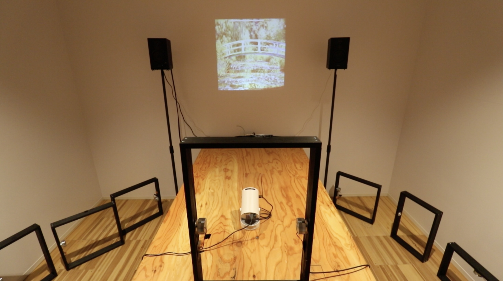
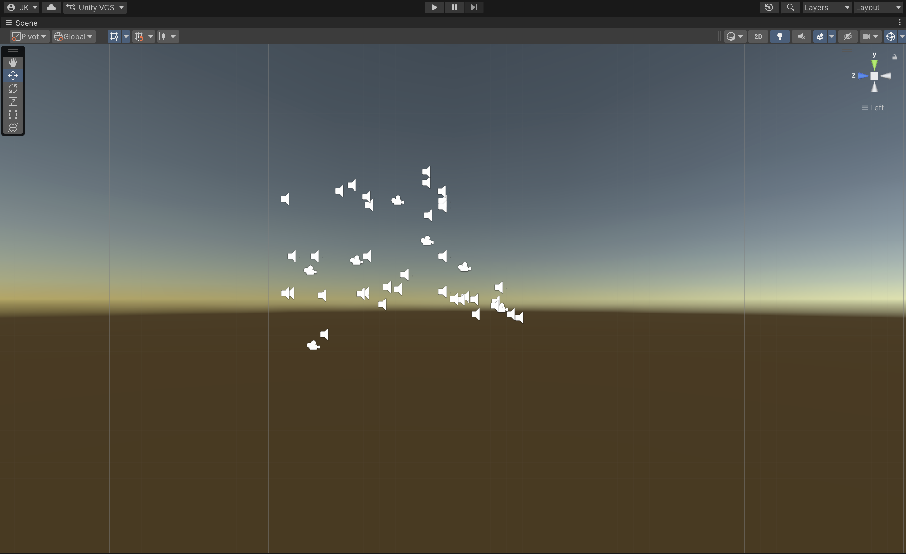
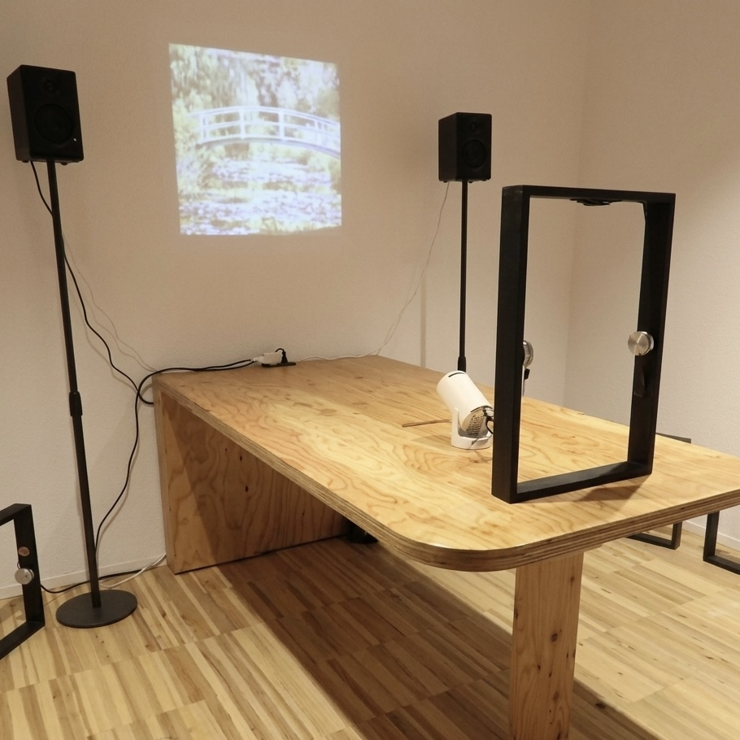
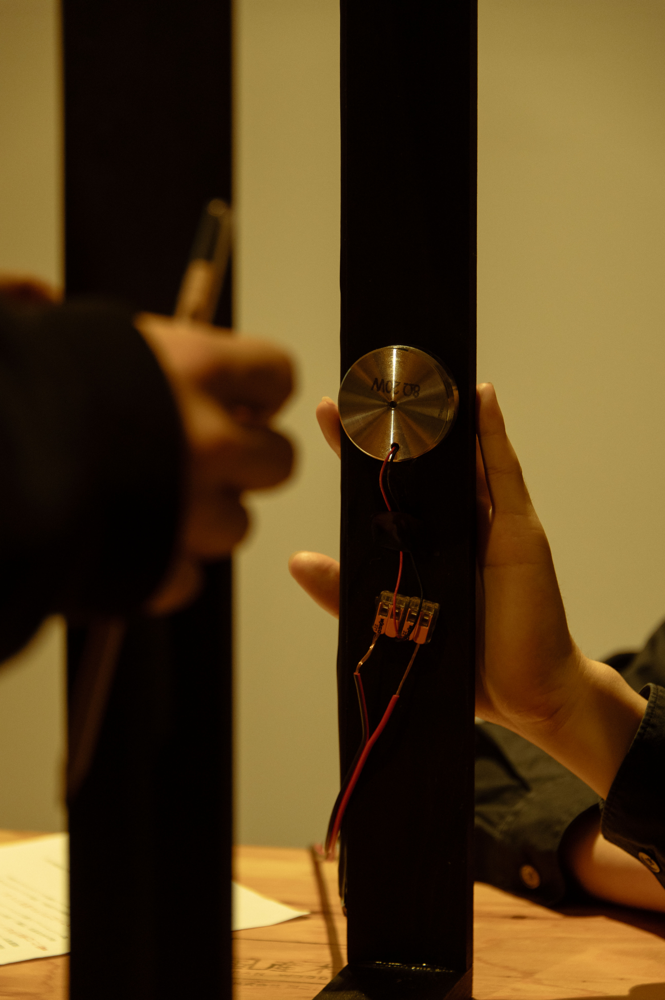
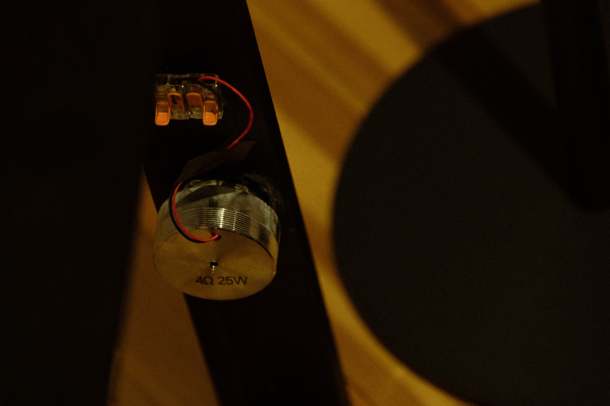
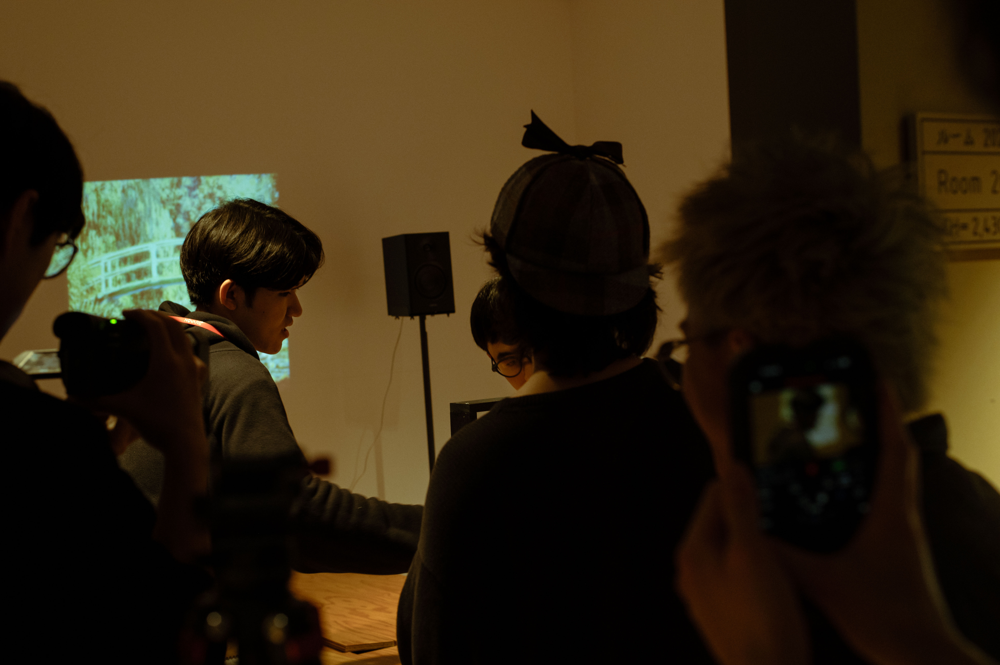

Work — 2026
絵画を聴く

「絵画を聴く」は、絵画の中に鳴っていたであろう環境音をデジタル上に作り出す、インタラクティブアート・研究プロジェクトである。従来の絵画鑑賞は、視覚と言語に依存した実践が主流であった。作者は、全盲の友人との絵画鑑賞で、言葉の説明では伝えきれない感覚があると気づき、絵画を音で拡張して共有する方法を探ってきた。
モネ《睡蓮の池と日本の橋》の文献調査と作品分析から、絵の中にあったかもしれない音を33個定義し、AIで効果音として生成して、絵の構図に沿ってUnityの3次元空間に配置し、一つの環境音にした。展示では、額縁を模した木枠に手を通すと、距離センサーが手の位置を読み取り、絵画の構図に合わせて環境音が変わり、振動スピーカーで木枠が震える。
2026年5月の展示から、6月のワークショップ、7月の鑑賞会へと広げた。見える人も見えない人も、同じ絵の前で空間を知覚し、話し合える環境をつくることを試みている。
なぜ私か、なぜ山梨で
Backgroundなぜ私か
私は大学でフランスの美術と思想を研究しながら、サウンドアートの制作を続けている。全盲の友人との鑑賞で知った感覚を出発点に、絵の中に鳴っていたであろう環境音を作曲する実践として、「絵画を聴く」を続けている。
なぜ山梨で
「絵画を聴く」は、絵画の鑑賞を、見える人にも見えない人にも開く作品である。入選した場合は、山梨で描かれた絵画を対象にしたい。
これまでの環境音は、モネの絵の文献調査から定義し、AIで生成した音である。山梨で描かれた絵画であれば、描かれた場所で音を採集し、絵の中に鳴っていたであろう音の素材にできる。
その絵を所蔵する美術館で行えれば、絵画鑑賞が営まれる場で、来場者の声を集められる。
仕組み
The Work手法
モネ《睡蓮の池と日本の橋》(1899年、プリンストン大学美術館蔵)の文献調査と作品分析から、絵の中に鳴っていたであろう音を、水音、植物音、生物音、鳥の声の4分類10要素、計33音に定義した。素材はElevenLabsで生成した。生成AIの使用箇所は、個別の効果音の素材生成である。素材はUnity上で3次元に配置し、発生確率を互いに連動させた。音は常に移り変わる。

Unity上における音の3D配置
インタラクションの仕組み
出力装置は、絵画のフレームを模した木枠で、振動スピーカーを設置している。Unityで構築した環境音を振動スピーカーに出力し、木枠そのものを震わせて鳴らす。距離センサーで空間を複数の領域に分割し、センサーの値をMax/MSP経由でUnityに送る。鑑賞者が木枠に手を通すと、手の位置に応じて環境音が変わり、木枠が震える。
写真
Photos
斜めから見たインスタレーション

振動スピーカーのディテール

振動スピーカーの端子

Max/MSPを用いた制作風景

ASIBA DEMO DAY 会場の様子
記録
Records2026年5月23〜24日 インスタレーション（ASIBA DEMO DAY）
モネ《睡蓮の池と日本の橋》を対象に、木枠、振動スピーカー、距離センサーの装置を制作した。
全盲の友人：「空間性を感じられる」「絵の要素を音で感じられる」
晴眼者：「振動により，絵画世界によりリアリティを感じる」
気づき：見える人も見えない人も、同じ場所でコミュニケーションできることが重要だと分かった。
2026年6月30日 美学校ワークショップ「聴く絵画をつくる」（7名）
無音で絵を見る、音をつけて見る、参加者がスマートフォンで音を選んで空間に置き、全員で一つの「聴く絵画」を共作する、の3段階で行った。
7段階評価：イメージの深化 5.1 → 6.4／没入感 5.3 → 6.0／奥行き 5.9 → 6.0（ほぼ変わらなかった）
声：「歩いて近づくことで他者の個性を体験できた」「人為的なもの（AI 効果音）の集合体が自然となるのが妙に思った」
課題：「音が強すぎて絵に意識が向かわない」
2026年7月25日 東京都盲人福祉協会 鑑賞会（八王子）
言語と音を使った鑑賞会を開いた。全盲・ロービジョンの方7名が対面で、1名がオンラインで参加した。前向きな声が多く出て、感じ方は人によって十人十色だった。
2026年9月 研究発表
第31回日本バーチャルリアリティ学会大会で、この3つの記録をまとめた論文を発表した。論文は、査読なしの技術報告として大会論文集に掲載されている。
クレジットと権利
Credits
制作：金子淳平
協力：ASIBA Creative League、100BANCH、NTTソノリティ（ワークショップのイヤホン提供）
画像：モネ《睡蓮の池と日本の橋》（プリンストン大学美術館蔵）